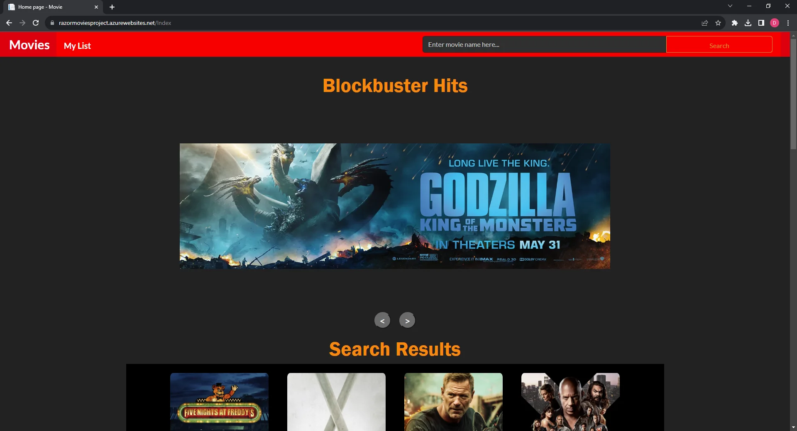
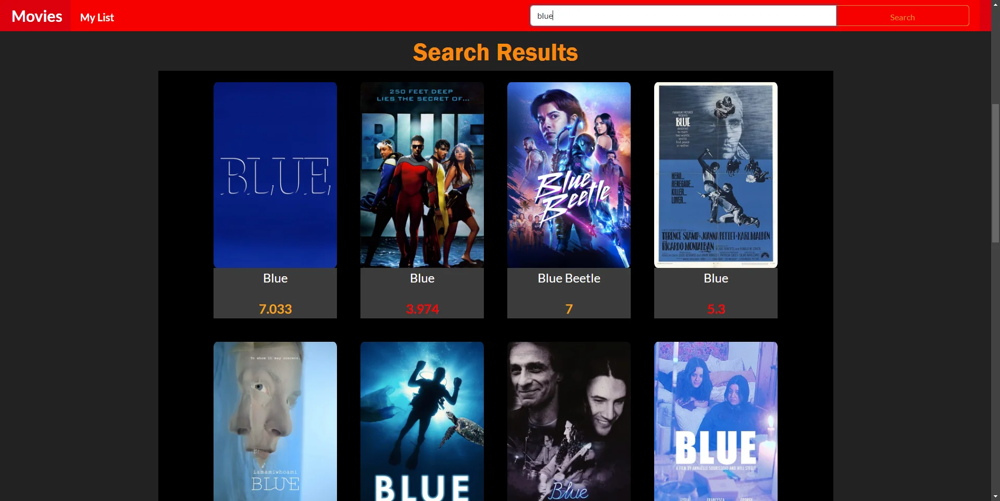

MyRazorMovies is a web application designed to cater to movie enthusiasts interested in tracking and managing a personal repository of favorite films. Built on the robust ASP.NET framework with C# and structured on the Razor Movies template project, this platform offers a seamless user experience and real-time movie data. The application leverages TheMovieDatabase (TMDb) API to fetch an updated list of trending and recent movies, providing users with a rich selection of titles to explore and add to their favorites.
The homepage features a dynamic display of the most recent and popular movies featuring their titles, posters, release dates, and popularity scores sourced directly from TMDb.
The application supports full Create, Read, Update, and Delete (CRUD) operations for user-curated lists. This allows for robust data management.
The website features a responsive design that adjusts seamlessly.
Search for a selection of movies using key words.
Utilizing the Model-View-Controller (MVC) pattern for a clean separation of concerns and streamlined codebase.
Leveraging C# for server-side logic, ensuring a strong object-oriented backbone for the application’s functionality.
Hosted on Microsoft Azure to utilize its secure, scalable cloud computing services, benefiting from Azure's app service features.
Integrated TMDb API to provide real-time access to their extensive movie database, enabling the application to display current and popular movie information.
Ensuring robustness in the user's ability to manage their movie lists required careful design of the CRUD interface. This was achieved by rigorous testing and iterative development to refine user interaction workflows.
Because I was using the lowest tier of Microsoft Azure's services, the application would go into an idle state after 20 minutes of inactivity, resulting in slower response times on the next visit. To mitigate this, I set up a monitor on UptimeRobot to keep the site active by pinging the server periodically.
I no longer use this workaround as I found it costly, so there's a cold start. Here's the link if you'd like to visit for yourself. Razor Movies.